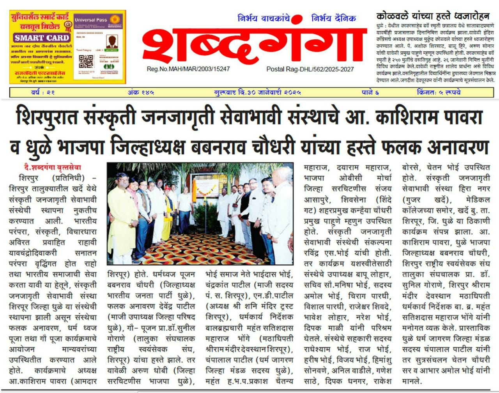
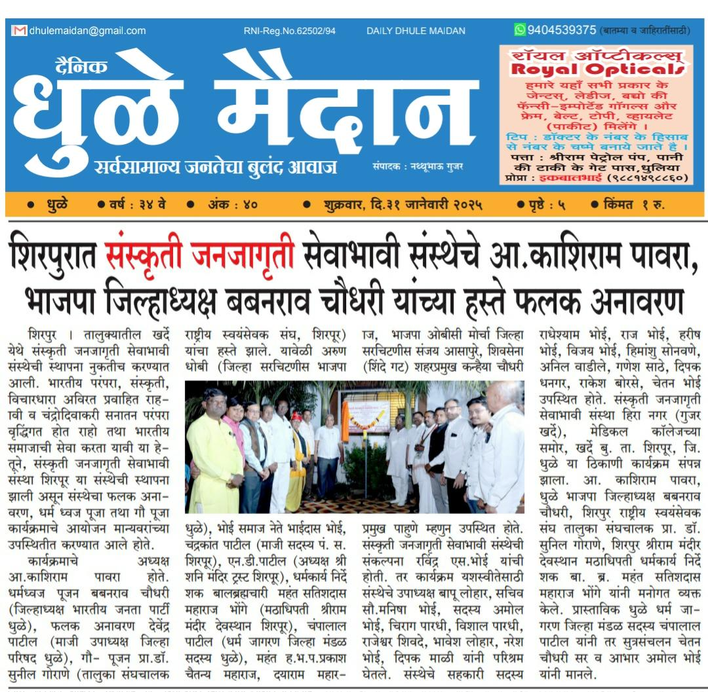

संस्कृती जनजागृती संस्था
"धर्मो रक्षति रक्षितः"
.jpeg)
आमच्याबद्दल
सस्नेह नमस्कार...
आपणांस आमंत्रित करण्यात येते की, भारतीय परंपरा, संस्कृती, विचारधारा अविरत प्रवाहित राहावी "यावदचंद्रोदिवाकरो" सनातन परंपरा वृद्धिंगत होत राहो तसे भारतीय समाजाची सेवा करता यावी या हेतूने, संस्कृती जनजागृती सेवाभावी संस्था शिरपूर जिल्हा धुळे या संस्थेची स्थापना केली असून विविध कार्ये हाती घेतली आहेत. या संस्थेच्या कार्याची माहिती व कार्यपद्धती खालीलप्रमाणे आहे.
संशोधन उद्देश्य:
- १. भारतीय समाजात हिंदू संस्कृतीची जनजागृती करणे.
- २. गोसेवा प्रयोग प्रारंभ करणे, गोशाळा स्थापन करणे.
- ३. शारीरिक स्वास्थ्य, सद्भभाव आणि समाजसेवेतून निवारा/पदार्थ दान करणे.
- ४. ग्रामपंचायतीमध्ये शारीरिक स्वास्थ्यासाठी औषध निर्मितीसाठी औषध निर्माण करणे, प्राथमिक दवाखाना, चिकित्सा केंद्र प्रमाणे शिक्षण देणे.
- ५. मानवी दुबळेपण, गो-गणेश, संवादयुती उपकारातर्फे, प्राथमिक डॉक्टर, पंचायत विचारचौथी चालविणे, योग निदान व चिकित्सा कार्यान्वयन करणे.
- ६. संपूर्ण भारतीय गोष्टींचा जतन करणं, त्यांचा संवर्धन करणे, गो विज्ञान केंद्र चालविणे.
- ७. भारतीय संस्कृतीचे संस्कार आणि संत विचारांच्या प्रयोगाचा प्रारंभ करणे, स्थानिकांना मदत करणे. तसेच अन्यथा चालविणे व रक्षणाची व्यवस्था करणे.
- ८. सार्वजनिक वाहतूक, पायी प्रवास, गोशाळा स्थापत्य आणि दवाखाना, फिरता दवाखाना तसेच औषधांचा व्यवसाय करणे. गाईच्या निगा तंत्रज्ञान व त्याचे प्रबंधन देणे. तसेच जयंती, हिंदू मंडळांनंतर रांगोळी स्पर्धा आयोजित करणे.
- ९. गावांमध्ये गो-सेवा करणे, आरोग्य क्षेत्रात मदत करणे, शिक्षण क्षेत्रात गरजूंना मदत करणे, बहुपर्यायी सेवा प्रदान करणे.
बातम्या आणि उपक्रम

शिरपुरात फलक अनावरण
शिरपूर तालुक्यातील खर्डे येथे संस्कृती जनजागृती सेवाभावी संस्थेचे फलक अनावरण आ. काशिराम पावरा यांच्या हस्ते...
धुळे भाजपा जिल्हाध्यक्ष बबनराव चौधरी यांच्या प्रमुख उपस्थितीत हा सोहळा संपन्न झाला. यावेळी अनेक मान्यवर आणि ग्रामस्थ उपस्थित होते.

धुळे मैदान बातमी
संस्थेच्या माध्यमातून हिंदू संस्कृतीची जनजागृती करण्यासाठी धुळे जिल्ह्यात विशेष मोहीम...
यावेळी धर्म जागरण जिल्हा मंडळाचे सदस्य आणि पदाधिकारी मोठ्या संख्येने उपस्थित होते.

अन्नदान उपक्रम
गरजूंना अन्नाचे वाटप करून संस्थेच्या वतीने सामाजिक बांधिलकी जपली जात आहे...
शनि मंदिर परिसरात आयोजित या उपक्रमात अनेक कुटुंबांना लाभ मिळाला.